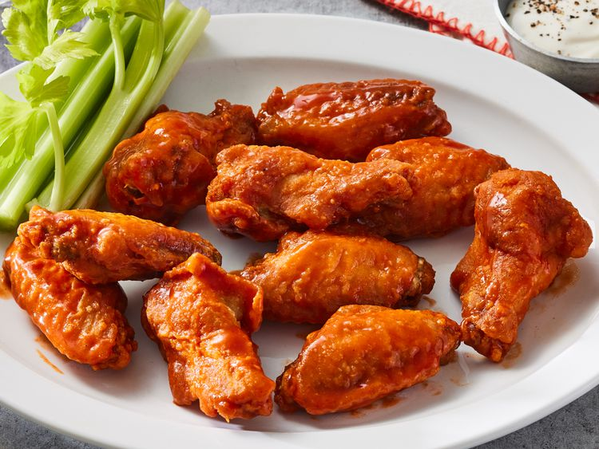

Chicken Wings

What's not to love about these wings??
They’re crispy on the outside, tender on the inside, and bursting with irresistible flavor. This fried chicken
wing recipe will quickly become a tried and true favorite.
Ingredients
- 12 small chicken wings
- 1/4 teaspoon seasoned salt
- 1 cup all-purpose flour
- 1 teaspoon coarse salt
- 1/2 teaspoon ground black pepper
- 1/4 teaspoon cayenne pepper
- 1/4 teaspoon ground paprika
- 2 quarts vegetable oil for frying
- 1 bottle Buffalo wing sauce
Home